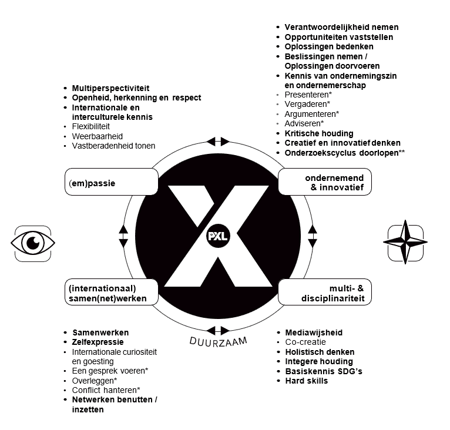

X-factor
De "Beentjes" van X-factor
(Em)passie
Uit mijn voorgaande opleidingen heb ik geleerd dat ik graag bezig ben met automatisatie en programmatie, vooral door het uitblinken in het programmeren van PLC en domotica.
Voorbeeld: Flexibiliteit
Uitleg voorbeeld: Door mijn voorgaande technische en IT-gerelateerde opleidingen laat ik mijn passie voor programmatie en IT zien, omdat ik graag dingen bijleer en hierdoor een breed spectrum aan kennis heb binnen IT.
Ondernemend & Innovatief
Door te experimenteren met nieuwe dingen en zelf projecten te maken, leer ik dingen toevoegen aan projecten die andere mensen die alleen cursussen volgen niet rechtstreeks implementeren.
Voorbeeld: Verantwoordelijkheid nemen
Uitleg voorbeeld: Door alleen te wonen, mijn leeftijd en mijn ervaring op de jobmarkt is het makkelijker voor mij om verantwoordelijkheid te nemen. Dit geldt zowel voor dingen die goed gedaan zijn als voor minpunten of slechte dingen die gebeurd zijn op het werkveld.
(Internationaal) Samen(net)werken
Door veel in contact te komen met studenten van andere opleidingen, klassen of leerjaren, kan ik meer dingen over coderen leren en sneller valkuilen herkennen waar andere studenten al tegenaan gelopen zijn. Deze kan ik hopelijk zelf vermijden.
Voorbeeld: Samenwerken
Uitleg voorbeeld: Door mijn ervaring in het werkveld heb ik vaak moeten samenwerken in teams voor mijn job. Omwille van deze ervaring is het makkelijker voor mij om mij comfortabel te voelen binnen nieuwe groepsprojecten en opdrachten met andere leerlingen tijdens mijn opleiding.
Multi- & Disciplinariteit
Door mijn theoretische vakken en ervaring uit het middelbaar toe te passen, lukt het beter om projecten op een efficiente manier aan te pakken.
Voorbeeld: Hard skills
Uitleg voorbeeld: Door de vorige reflecties te maken heb ik een beter besef van mijn hard skills. Hier probeer ik dan ook gebruik van te maken tijdens mijn opleiding om deze op een efficiente manier te benutten.
